When ordering, specify finish: natural or polished and specify color: natural or dyed. Add .10¢ for dyed or polished finish. Antlers come in a variety of shapes and sizes from approximately 5/8" – 2".
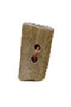
BARD 1"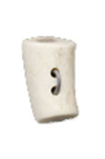
BARN 1"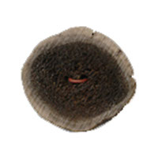
XCUTD 1 1/2"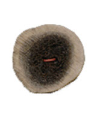
XCUTD 1 1/4"(also in: 1", 7/8", 3/4", 5/8")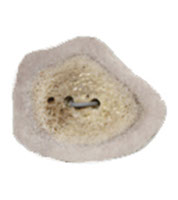
XCUTN 1 1/2"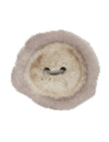
XCUTN 1 1/4"(also in: 1", 7/8", 3/4", 5/8")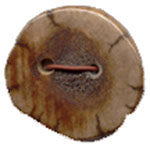
PXCUTD 1 1/4"(POLISHED)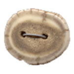
PXCUTN 1 1/4"(POLISHED)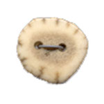
PXCUTN 1"(POLISHED)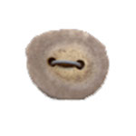
PXCUTN 7/8"(POLISHED)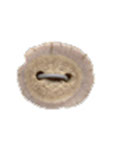
PXCUTN 3/4"(POLISHED)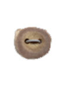
PXCUTN 5/8"(POLISHED)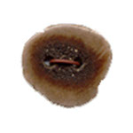
PXCUTD 1"(POLISHED)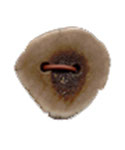
PXCUTD 7/8"(POLISHED)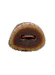
PXCUTD 5/8"(POLISHED)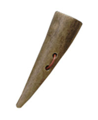
TIPD 2"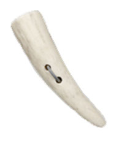
TIPN 2"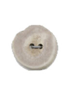
PXCUTN 1"(POLISHED)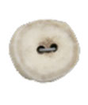
PXCUTN 7/8"(POLISHED)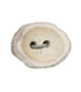
PXCUTN 3/4"(POLISHED)